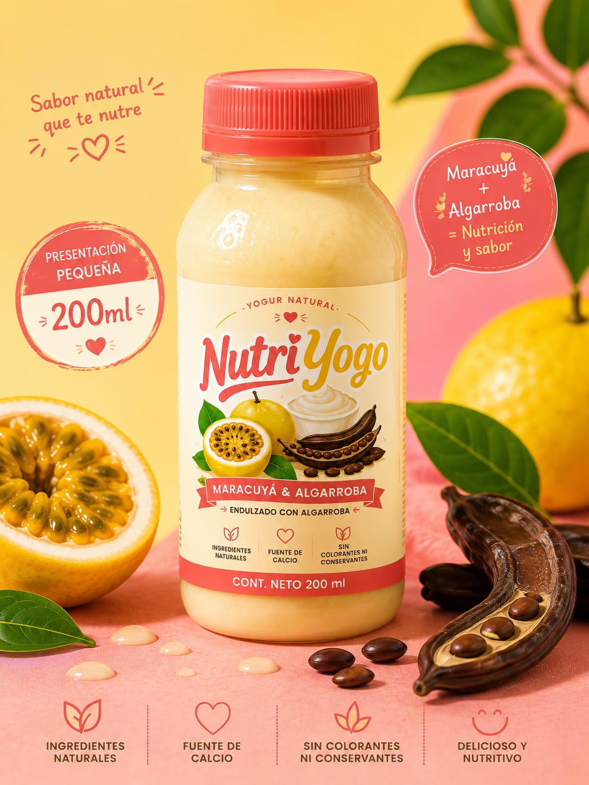
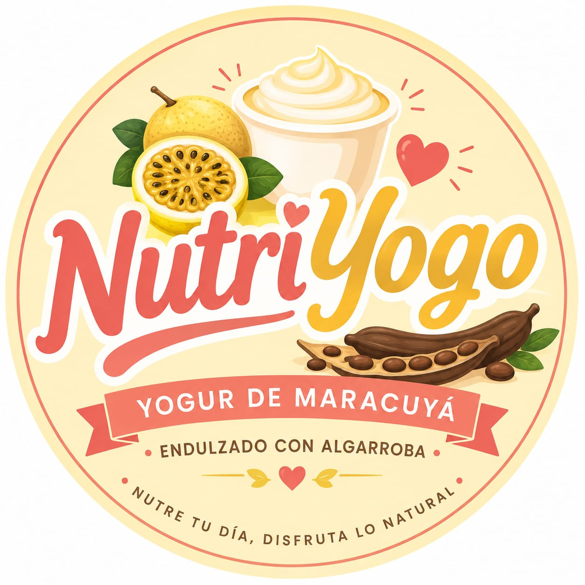
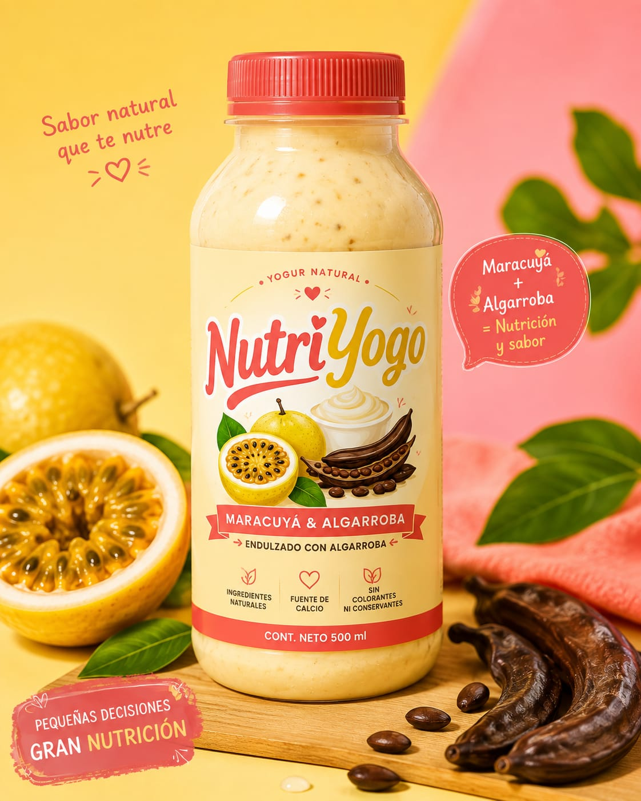
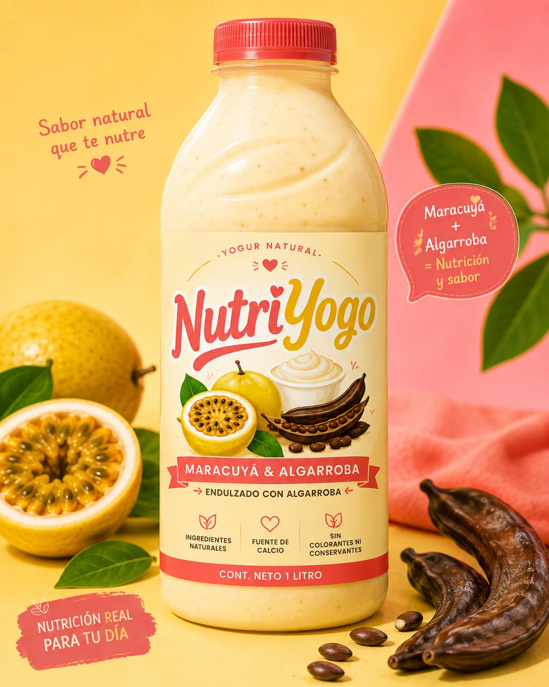
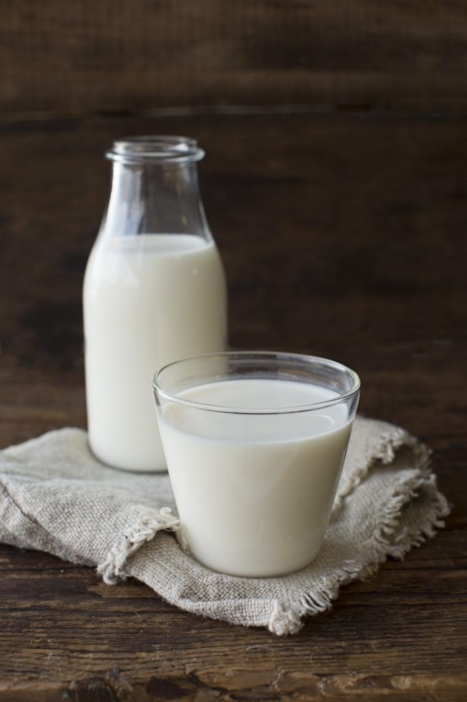

Yogur de 200 mL: $4.500 COP


Yogur de 200 mL: $4.500 COP

Yogur de 500 mL: $9.500 COP

Yogur de 1 litro (1000 mL): $17.500 COP

La leche es un alimento de alto valor nutricional que aporta proteínas de excelente calidad, calcio, fósforo, vitamina D (cuando está fortificada), vitaminas del complejo B y grasas saludables. Sus principales beneficios incluyen el fortalecimiento de huesos y dientes, el mantenimiento de la masa muscular, el apoyo al crecimiento y el aporte de energía. Además, las proteínas presentes en la leche contienen aminoácidos esenciales necesarios para la reparación y formación de tejidos del organismo.
La algarroba es el fruto del algarrobo y destaca por su alto contenido de fibra, antioxidantes, calcio, magnesio y vitaminas del complejo B. Es utilizada como sustituto del cacao porque posee un sabor similar y no contiene cafeína. Sus propiedades favorecen el funcionamiento del sistema digestivo, ayudan a controlar los niveles de colesterol y glucosa, promueven la sensación de saciedad y contribuyen a la prevención de enfermedades cardiovasculares gracias a sus compuestos antioxidantes.
El maracuyá (Passiflora edulis) es una fruta tropical rica en vitamina C, vitamina A, fibra, potasio y compuestos antioxidantes como los flavonoides. Entre sus principales propiedades se encuentran su acción antioxidante, digestiva y relajante. Su consumo puede contribuir a fortalecer el sistema inmunológico, favorecer la salud del corazón, mejorar la digestión gracias a su contenido de fibra y ayudar a controlar los niveles de glucosa en sangre. Además, algunos de sus compuestos naturales se asocian con un efecto calmante que puede contribuir a disminuir el estrés y la ansiedad.

Los cultivos lácticos son microorganismos beneficiosos, principalmente bacterias del ácido láctico como Lactobacillus y Streptococcus, utilizados en la elaboración de yogures y otros productos fermentados. Estos microorganismos fermentan la lactosa y producen ácido láctico, mejorando el sabor, la textura y la conservación de los alimentos. Entre sus beneficios se encuentran el equilibrio de la microbiota intestinal, el apoyo a la digestión, la inhibición del crecimiento de bacterias perjudiciales y el fortalecimiento de la salud digestiva.
Un yogur elaborado con leche, maracuyá, algarroba y cultivos lácticos ofrece múltiples beneficios nutricionales y funcionales, ya que combina las propiedades de cada ingrediente. La leche aporta proteínas de alta calidad, calcio y vitaminas esenciales para fortalecer los huesos y los músculos; el maracuyá proporciona vitamina C, vitamina A, antioxidantes y fibra, que ayudan a fortalecer el sistema inmunológico y mejorar la digestión; la algarroba añade fibra, minerales y un sabor naturalmente dulce que permite reducir el uso de azúcar; y los cultivos lácticos actúan como probióticos, favoreciendo el equilibrio de la microbiota intestinal, mejorando la digestión y contribuyendo a una mejor absorción de nutrientes. En conjunto, estos ingredientes dan como resultado un yogur nutritivo, de buen sabor y textura, que puede contribuir al bienestar digestivo, al fortalecimiento del sistema inmunológico y a una alimentación saludable.